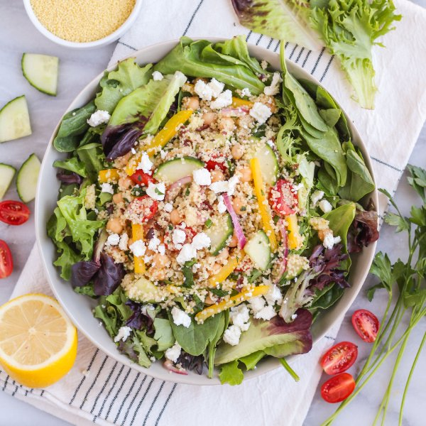

Couscous Greek Salad with Spring Greens & Feta

Nutrition (per serving)
627.3 kcalCalories
21.8 gProtein
79.8 gCarbs
28 gFat
Full nutrition table
| Calories | 627.3 kcal |
| Total fat | 28 g |
| Saturated fat | 6.7 g |
| Trans fat | 0.4 g |
| Cholesterol | 25.1 mg |
| Sodium | 763.7 mg |
| Carbohydrates | 79.8 g |
| Fiber | 15.7 g |
| Sugars | 10 g |
| Protein | 21.8 g |
| Potassium | 1110.1 mg |
| Calcium | 277.6 mg |
| Iron | 4.8 mg |
| Vitamin A | 900.4 IU |
| Vitamin C | 101.3 mg |
| Vitamin D | 4.5 IU |
Cookware
Ingredients
- 16 fl ozchicken or vegetable broth
- 1 (4 oz) pkgcrumbled feta cheese
- 1English cucumber
- 1 (15 oz) cangarbanzo beans (chickpeas)
- 4 clovesgarlic
- 1 pintgrape tomatoes
- 1 small bunchItalian (flat-leaf) parsley
- ½ cupKalamata olives, pitted
- 1lemon
- 1 mediumred onion
- 2 (5 oz) pkgsspring mix (mixed greens)
- 1 ⅓ cupswhole wheat couscous
- 1yellow bell pepper
- extra virgin olive oil
- honey
- red wine vinegar
- salt
Steps
- In a medium saucepan, bring broth to a boil. Remove from heat, add couscous, and stir. Cover and let stand for 10 minutes.16 fl oz (2 cups) chicken or vegetable broth
1 ⅓ cups whole wheat couscous - Meanwhile, wash and dry the fresh produce. (Skip the mixed greens if they came pre-washed.)1 lemon
1 English cucumber
1 pint grape tomatoes
1 yellow bell pepper
1 small bunch Italian (flat-leaf) parsley
2 (5 oz) pkgs spring mix (mixed greens) - Mince olives and transfer to a large bowl.½ cup Kalamata olives, pitted
- Zest and juice lemon into the bowl with the olives.
- Peel and mince garlic. Add to the bowl along with oil, vinegar, honey, and salt; whisk to combine the dressing.4 cloves garlic
¼ cup extra virgin olive oil
¼ cup red wine vinegar
1 tsp honey
1 tsp salt - Peel and thinly slice onion into half rings. Add to the bowl and toss to combine.1 medium red onion
- Trim and quarter cucumber lengthwise, then slice crosswise into ¼-inch pieces. Add to the bowl.
- Halve tomatoes and add to the bowl.
- Seed and slice bell pepper into thin strips; add to the bowl.
- Once the couscous is done, transfer to a large baking sheet pan and spread out in an even layer to cool.
- Shave parsley leaves off the stems; discard stems, mince leaves, and add to the bowl.
- Drain and rinse chickpeas; add to the bowl.1 (15 oz) can garbanzo beans (chickpeas)
- Add couscous and feta to the bowl; toss to combine the salad.1 (4 oz) pkg crumbled feta cheese
- To serve, divide mixed greens between bowls. Top with couscous salad and enjoy!